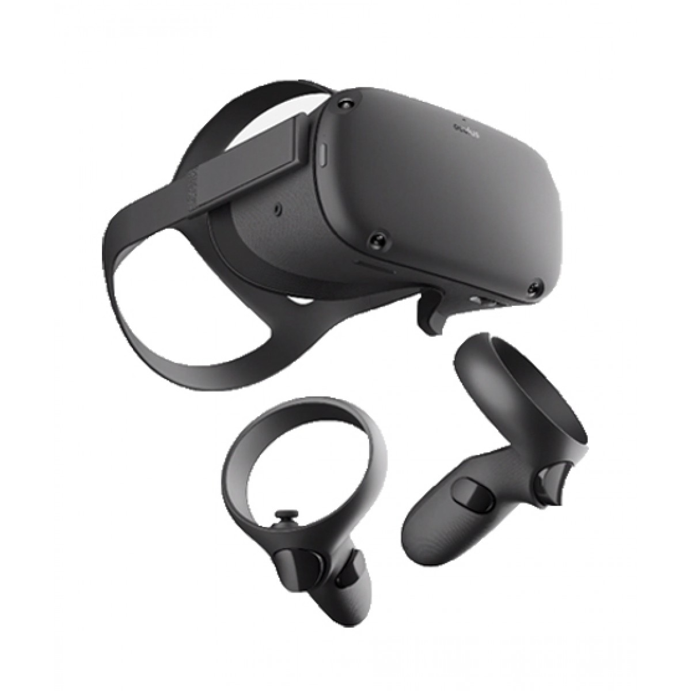
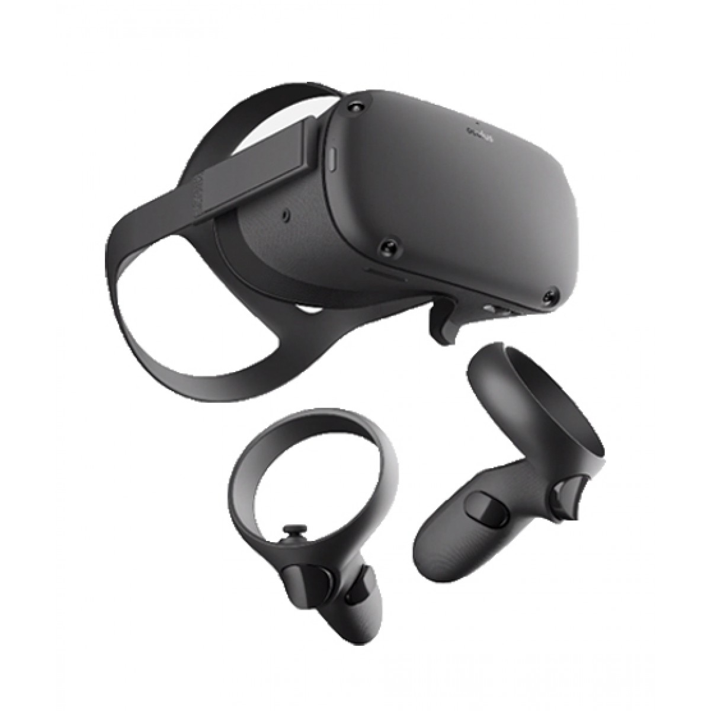

The exact origins of virtual reality are disputed, partly because of how difficult it has been to formulate a definition for the concept of an alternative existence. The development of perspective in Renaissance Europe created convincing depictions of spaces that did not exist, in what has been referred to as the "multiplying of artificial worlds". Other elements of virtual reality appeared as early as the 1860s. Antonin Artaud took the view that illusion was not distinct from reality, advocating that spectators at a play should suspend disbelief and regard the drama on stage as reality. The first references to the more modern concept of virtual reality came from science fiction.
Morton Heilig wrote in the 1950s of an "Experience Theatre" that could encompass all the senses in an effective manner, thus drawing the viewer into the onscreen activity. He built a prototype of his vision dubbed the Sensorama in 1962, along with five short films to be displayed in it while engaging multiple senses (sight, sound, smell, and touch). Predating digital computing, the Sensorama was a mechanical device. Heilig also developed what he referred to as the "Telesphere Mask" (patented in 1960). The patent application described the device as "a telescopic television apparatus for individual use...The spectator is given a complete sensation of reality, i.e. moving three dimensional images which may be in colour, with 100% peripheral vision, binaural sound, scents and air breezes." In 1968, Ivan Sutherland, with the help of his students including Bob Sproull, created what was widely considered to be the first head-mounted display system for use in immersive simulation applications. It was primitive both in terms of user interface and visual realism, and the HMD to be worn by the user was so heavy that it had to be suspended from the ceiling. The graphics comprising the virtual environment were simple wire-frame model rooms. The formidable appearance of the device inspired its name, The Sword of Damocles. By 2016, there were at least 230 companies developing VR-related products. Amazon, Apple, Facebook, Google, Microsoft, Sony and Samsung all had dedicated AR and VR groups. Dynamic binaural audio was common to most headsets released that year. However, haptic interfaces were not well developed, and most hardware packages incorporated button-operated handsets for touch-based interactivity. Visually, displays were still of a low-enough resolution and frame rate that images were still identifiable as virtual. In 2016, HTC shipped its first units of the HTC Vive SteamVR headset. This marked the first major commercial release of sensor-based tracking, allowing for free movement of users within a defined space. A patent filed by Sony in 2017 showed they were developing a similar location tracking technology to the Vive for PlayStation VR, with the potential for the development of a wireless headset. The Oculus Rift S was released on 20 March 2019.